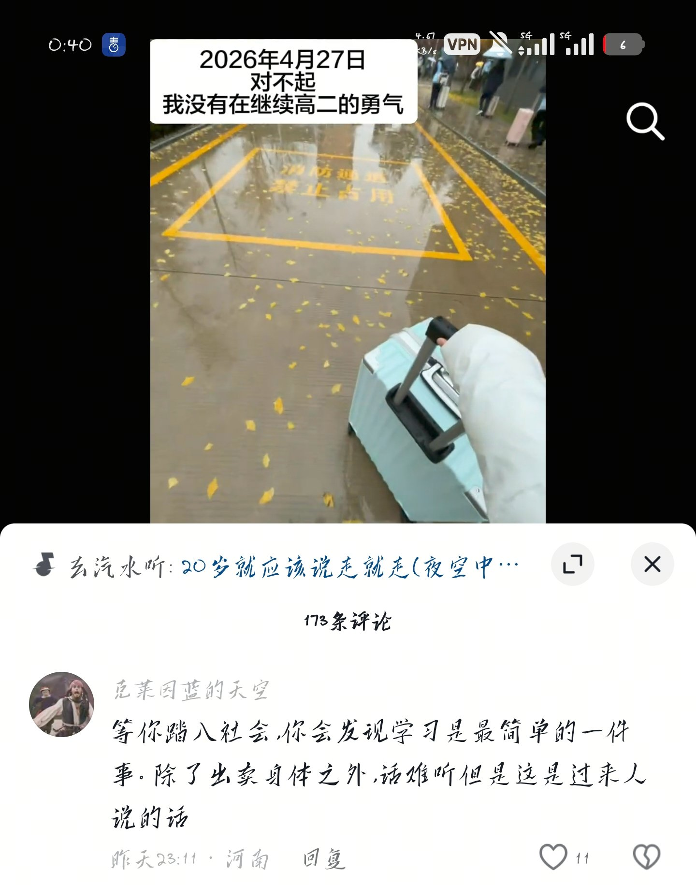

11
@SonjaTasha26957
@432Ifantrygroup 傻逼把自己职业拿出来说干啥。

432InfantryRegiment
@432Ifantrygroup
这博主退学的原因你知道吗？我看你也不想知道，你只想高高在上的指点一番，彰显你所谓的成熟
你真要关心她，首先至少该问问她在学校遇到的困难是什么吧？以我对类似情况的了解，学生在学校呆不下去，最常见的原因是社交问题！人没朋友是无法在群体中生活的，其次是师生关系问题，然后才是学习上的问题 https://t.co/9wi7G2USwx